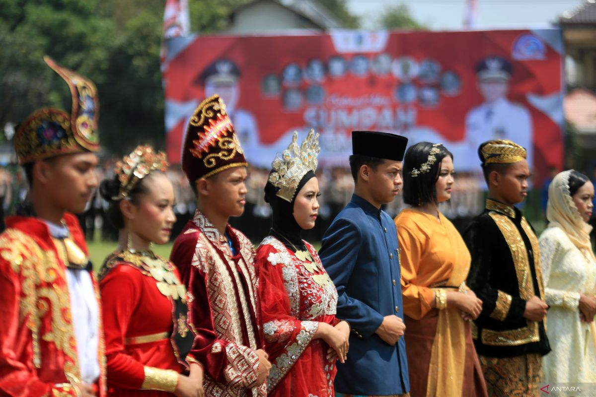
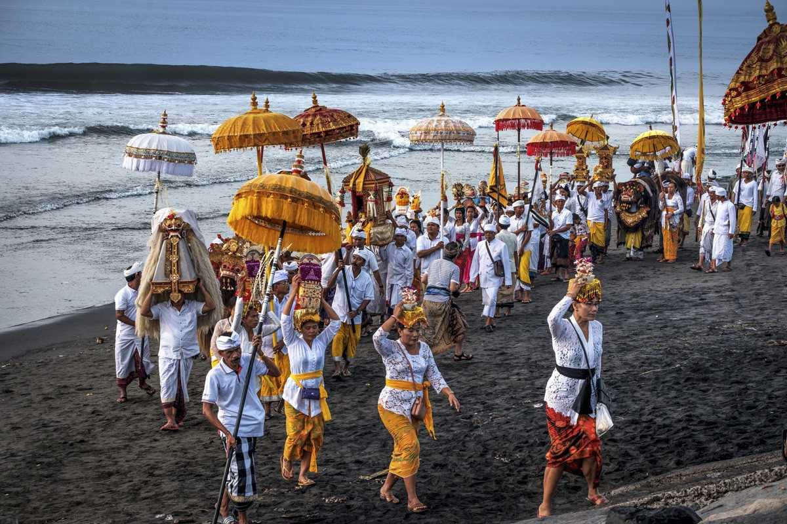
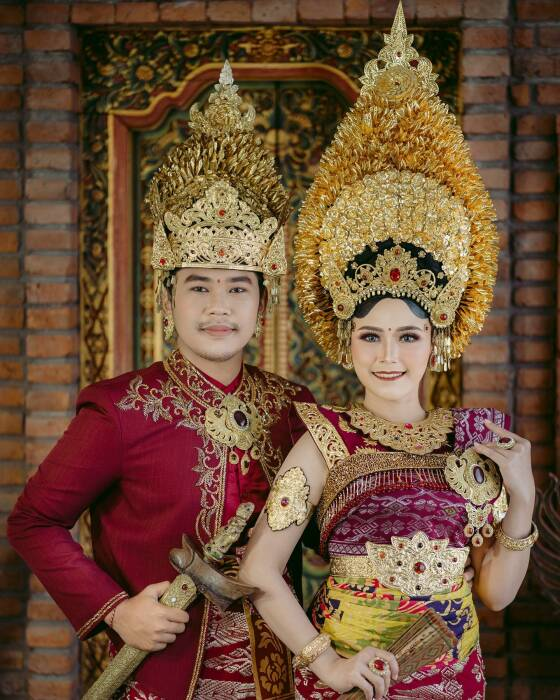
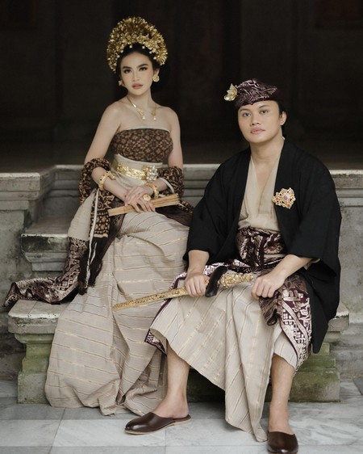
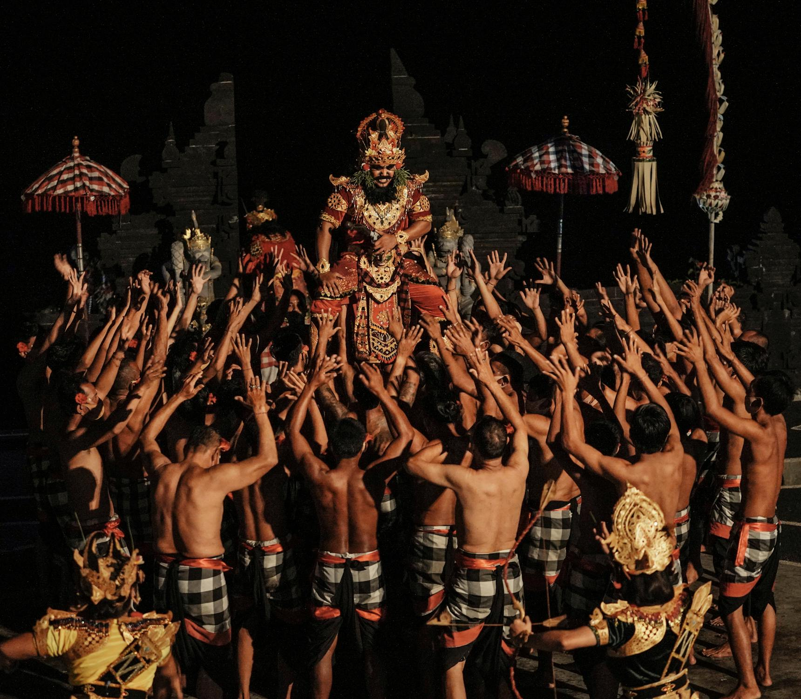
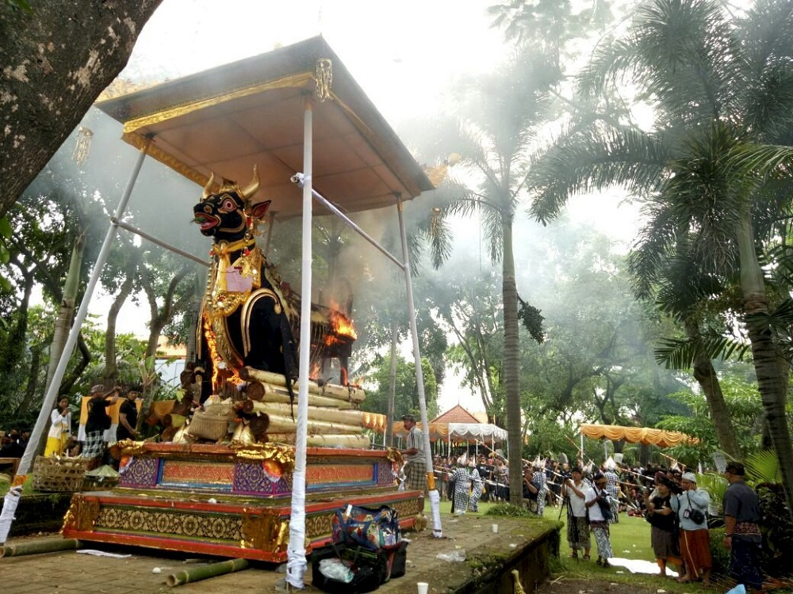
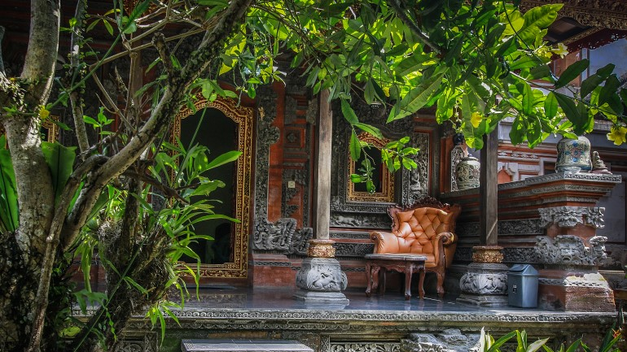

Hari Nusantara
Beranda
Kegiatan
Jelajahi
Kekayaan Samudera
Budaya Nusantara
Galeri
Tentang
Galeri
Kegiatan Hari Nusantara

Video Kegiatan Hari Nusantara
Kekayaan Samudera - Hayati
Video Kekayaan Samudera - Hayati
Kekayaan Samudera - Non Hayati
Video Kekayaan Samudera - Non Hayati
Budaya Nusantara - Bali






Video Budaya dan Tradisi Bali
Budaya Nusantara - Yogyakarta
Video Budaya dan Tradisi Yogyakarta
Budaya Nusantara - Papua
Video Budaya dan Tradisi Papua
Budaya Nusantara - Aceh
Video Budaya dan Tradisi Aceh
Budaya Nusantara - Lampung
Video Budaya dan Tradisi Lampung